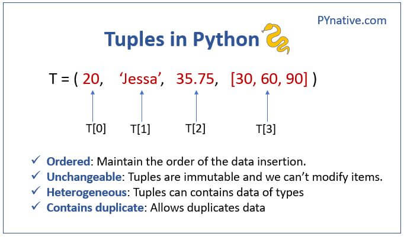
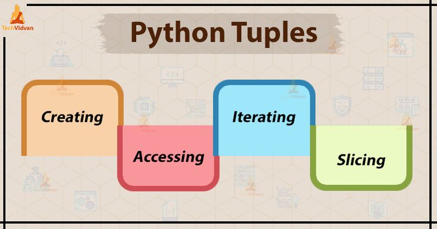
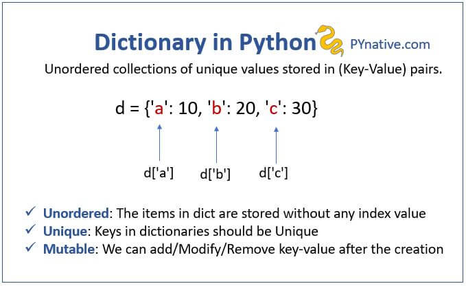
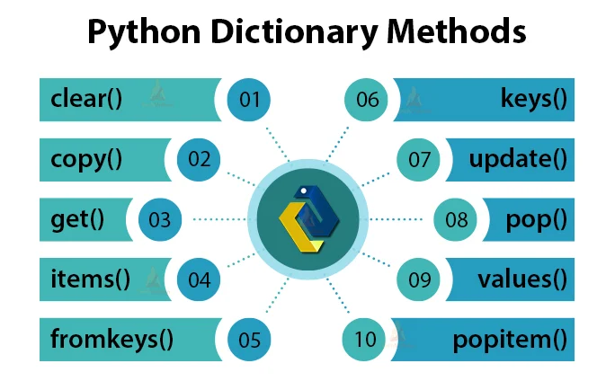

Tuple
Contents
Tuple¶
Lists aren’t the only data types that represent ordered sequences of values. For example, tuples and lists are actually similar.Many of the things you can do with lists can also be done with tuple: indexing; slicing; and using them with for loops, with len().

Tuple data type¶

candies = ('hello', 42, 0.5) # creating tuple
candies[0] # indexing
'hello'
candies[1:3] # slicing
(42, 0.5)
t=() # empty tuple
t1=(100,)
t1
(100,)
In Python, (11,) is a tuple with a single element 11.
The comma after 11 is important because it differentiates a tuple with a single element from a simple integer with parentheses.
To create a tuple in Python, you simply enclose the elements in parentheses and separate them with commas.
Comparing tuples¶
In Python, you can compare tuples using the comparison operators such as <, <=, >, >=, ==, and !=.
Tuples are compared element-wise, starting from the leftmost element, and the comparison stops as soon as a mismatch is found.
t1 = (1, 2, 3)
t2 = (1, 2, 4)
print(t1 < t2 )
print(t1 > t2)
print(t1 == t2)
print(t1 != t2)
True
False
False
True
Tuple Assignments¶
Tuple assignment is a feature in Python that allows you to assign multiple variables at once by unpacking the values in a tuple. Here’s an example:
my_tuple = (1, 2, 3)
a, b, c = my_tuple
print(a)
print(b)
print(c)
1
2
3
a,b = 10,20
print(a)
print(b)
print(a,b)
10
20
10 20
# Swapping two variables
a = 1
b = 2
a, b = b, a
print(a) # Output: 2
print(b) # Output: 1
2
1
Updating Tuple¶
Tuples are immutable. So we an extract, assign or update values of one tuple by creating another tuple.
t1=(10,20,30)
t2=(40,50)
t3=t1+t2
print(t3)
(10, 20, 30, 40, 50)
Deleting Tuple¶
we can delete tuple using del statement.
T1=(10,20,30,40)
del T1
print(T1)
---------------------------------------------------------------------------
NameError Traceback (most recent call last)
<ipython-input-21-cf5fc0f3a9f6> in <cell line: 1>()
----> 1 print(T1)
NameError: name 'T1' is not defined
zip() fuction¶
In Python, the zip() function can be used to combine two or more iterables into a single iterable of tuples. Each tuple contains the corresponding elements from the input iterables.
Here’s an example:
t=(10,20,30)
my_tuple = ("apple", "banana", "cherry")
print(list(zip(t,my_tuple)))
[(10, 'apple'), (20, 'banana'), (30, 'cherry')]
Dictionary¶

Creating dictionary¶
myphone = {'brand': 'apple', 'color': 'gray', 'model': 'iphoneX'}
myphone
{'brand': 'apple', 'color': 'gray', 'model': 'iphoneX'}
Accessing items¶
myphone['brand']
'apple'
Adding items¶
1 . Assign a new key-value pair¶
my_dict = {"apple": 2, "banana": 3, "orange": 1}
my_dict["pear"] = 4
print(my_dict)
{'apple': 2, 'banana': 3, 'orange': 1, 'pear': 4}
2 . update() method¶
my_dict1 = {"apple": 2, "banana": 3, "orange": 1,'grapes':5}
new_items = {"pear": 4, "kiwi": 2, "mango": 1}
my_dict1.update(new_items)
print(my_dict1)
{'apple': 2, 'banana': 3, 'orange': 1, 'grapes': 5, 'pear': 4, 'kiwi': 2, 'mango': 1}
Removing items¶
1 . del statement¶
d = {"apple": 2, "banana": 3, "orange": 1}
print('original dictionary ',d)
del d["banana"]
print(d)
original dictionary {'apple': 2, 'banana': 3, 'orange': 1}
{'apple': 2, 'orange': 1}
2 . pop() method¶
my_dict2 = {"apple": 2, "banana": 3, "orange": 1}
value = my_dict2.pop("banana")
print(my_dict2)
print(value)
{'apple': 2, 'orange': 1}
3
Changing value¶
my_dict = {"apple": 2, "banana": 3, "orange": 1}
my_dict["banana"] = 4
print(my_dict)
{'apple': 2, 'banana': 4, 'orange': 1}
Methods in dictionary¶

# create a dictionary
my_dict_1 = {"apple": 2, "banana": 3, "orange": 1}
# clear() method
my_dict_1.clear()
print(my_dict_1)
# fromkeys() method
keys = ["apple", "banana", "orange"]
values = [2, 3, 1]
my_dict_2 = dict.fromkeys(keys, 0)
print(my_dict_2)
# get() method
my_dict_3 = {"apple": 2, "banana": 3, "orange": 1}
value = my_dict_3.get("banana", 0)
print(value)
# items() method : (dictionary & tuple)
my_dict_4 = {"apple": 2, "banana": 3, "orange": 1}
items = my_dict_4.items()
print(items)
# keys() method
my_dict_5 = {"apple": 2, "banana": 3, "orange": 1}
keys = my_dict_5.keys()
print(keys)
# values() method
my_dict_6 = {"apple": 2, "banana": 3, "orange": 1}
values = my_dict_6.values()
print(values)
# pop() method
my_dict_7 = {"apple": 2, "banana": 3, "orange": 1}
value = my_dict_7.pop("banana")
print(value)
print(my_dict_7)
# popitem() method
my_dict_8 = {"apple": 2, "banana": 3, "orange": 1}
item = my_dict_8.popitem()
print(item)
print(my_dict_8)
# setdefault() method
my_dict_9 = {"apple": 2, "banana": 3, "orange": 1}
value = my_dict_9.setdefault("pear", 4)
print(value)
print(my_dict_9)
# update() method
my_dict_10 = {"apple": 2, "banana": 3, "orange": 1}
new_dict = {"pear": 4, "kiwi": 2}
my_dict_10.update(new_dict)
print(my_dict_10)
{}
{'apple': 0, 'banana': 0, 'orange': 0}
3
dict_items([('apple', 2), ('banana', 3), ('orange', 1)])
dict_keys(['apple', 'banana', 'orange'])
dict_values([2, 3, 1])
3
{'apple': 2, 'orange': 1}
('orange', 1)
{'apple': 2, 'banana': 3}
4
{'apple': 2, 'banana': 3, 'orange': 1, 'pear': 4}
{'apple': 2, 'banana': 3, 'orange': 1, 'pear': 4, 'kiwi': 2}
Multiple Assignment with Dictionaries¶
person = {'name': 'John', 'age': 25, 'location': 'New York'}
for key , value in list(person.items()):
print(key , value)
name John
age 25
location New York
Above code iterates over the key-value pairs in the person dictionary using a for loop and the items() method.
# Define a dictionary
person = {'name': 'John', 'age': 25, 'location': 'New York'}
# Assign multiple values to multiple variables
name, age, location = person['name'], person['age'], person['location']
# Print the values of the variables
print(name) # Output: John
print(age) # Output: 25
print(location) # Output: New York
John
25
New York
Multiple assignment with dictionaries allows you to assign multiple values to multiple variables at once using a dictionary. This can be useful when you have a dictionary with multiple key-value pairs and you want to assign each value to a separate variable.
Practice Questions¶
Difficulty Level : Easy¶
Q. Write a Python program to find the maximum and minimum value in a tuple.
Example :
my_tuple = (1, 2, 3, 4, 5)
max_value = 5
min_value = 1
## your code ##
Q. Write a Python program to count the number of occurrences of an element in a tuple.
my_tuple = (1, 2, 3, 4, 5, 3, 2, 1, 3)
occurrence of 3 is 3 times
Q. Create a dictionary named student and it should contain your Name, Gender, Age & Programming language. After creating it add a new key Roll number and set its value as 43.
## your code ##
Q. Create a code that takes 2 dictionaries which returns the total bill after selling every fruit according to their rate specified.
Example :
stock = {“banana”: 6, “apple”: 0, “orange”: 32, “pear”: 15}
prices = {“banana”: 4, “apple”: 2, “orange”: 1.5, “pear”: 3}
Total bill : 117.0
## your code ##
Q. Create a dictionary by assigning the keys from a list and its values from the user using input function.
List :
keys_list = [ "Name", "Birth Month", "Programming Language", "Salary" ]
Difficulty Level : Medium¶
Q. Write a program to create the tuple using the dictionary elements. The elements of tuple should be arranged in sorted order based on values of dictionary elements.
d={'AAA':10,'BBB':5,'CCC':30,'DDD':2}
## your code ##
Q. Create a code that displays the unique elements present inside the dictionary in descending order in a single line.
Example :
marks = {“English”: 78, “Maths”: 89, “Science”: 92, “History”: 89, “Geography”: 77, “Physics”: 92, “Chemistry”: 78}
92 89 78 77
## your code ##
Q. Create a code for tuple of countries and display the number of vowels in the name of each country.
Example :
asian_countries = (‘afghanistan’, ‘bangladesh’, ‘bhutan’, ‘china’, ‘india’, ‘iran’, ‘iraq’, ‘israel’,’japan’)
afghanistan has 4 vowels.
bangladesh has 3 vowels.
bhutan has 2 vowels.
china has 2 vowels.
india has 3 vowels.
iran has 2 vowels.
iraq has 2 vowels.
israel has 3 vowels.
japan has 2 vowels.
## your code ##
Difficulty Level : Hard¶
Q. Write a program that will find all the numbers between 1000 and 3000 (both included) such that each digit of the number is an even number and the numbers obtained should be printed in a comma - separated sequence on a single line.
## your code ##
Q. Create a code that will try to mimic the SUPEROVER scenario from Cricket. You have to create 2 dictionaries for 2 teams and each dictionary will contain the outcome of 6 balls bowled in the superover as key (i.e- run scored on that ball) and values of that dictionary will be as follows:
‘W’ : 0 runs
‘R’ : 1-6 runs
The runs scored will be generated randomly using random module by using random.randint(0,6) and make sure that you are including the number 5 in dictionary deliberately even though there is no 5 runs in cricket. You also have to track the number of wickets fallen in that superover.
Also make sure that your dictionary has 6 unique keys for every deliveries in a superover. The output of the code should be dictionaries of both the teams and scorecard along with the number of wickets fallen, by comparing the scores of both the teams show which team has won in superover, as shown in the example below:
Example :
Performance of Team1 : {0: ‘W’, 1: ‘R’, 3: ‘R’, 4: ‘R’, 5: ‘R’, 6: ‘R’}
Performance of Team2 : {0: ‘W’, 1: ‘R’, 3: ‘R’, 4: ‘R’, 5: ‘R’, 6: ‘R’}
Scorecard of Team1 : 19 / 1
Scorecard of Team2 : 19 / 1
Its a Draw!
Performance of Team1 : {0: ‘W’, 1: ‘R’, 2: ‘R’, 4: ‘R’, 5: ‘R’, 6: ‘R’}
Performance of Team2 : {0: ‘W’, 1: ‘R’, 2: ‘R’, 3: ‘R’, 4: ‘R’, 6: ‘R’}
Scorecard of Team1 : 18 / 1
Scorecard of Team2 : 16 / 1
Team1 wins by 2 runs!
Performance of Team1 : {0: ‘W’, 1: ‘R’, 3: ‘R’, 4: ‘R’, 5: ‘R’, 6: ‘R’}
Performance of Team2 : {0: ‘W’, 1: ‘R’, 2: ‘R’, 3: ‘R’, 4: ‘R’, 5: ‘R’}
Scorecard of Team1 : 19 / 1
Scorecard of Team2 : 15 / 1
Team1 wins by 4 runs!
## your code ##